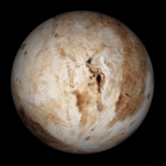

Pluto

Pluto is een complexe wereld van ijsbergen en bevroren vlaktes.
Ooit beschouwd als de negende planeet,
is Pluto het grootste lid van de Kuipergordel
en de bekendste van een nieuwe klasse van werelden
die dwergplaneten worden genoemd.
lengte
Pluto is ongeveer 2.380 km breed.
Dat is ongeveer de helft van de breedte van de Verenigde Staten,
of 2/3 van de breedte van de maan van de aarde.
maandans
Pluto heeft 5 mannen.
De grootste, Charon, is zo groot dat
Pluto en Charon als een dubbele planeet om elkaar heen draaien